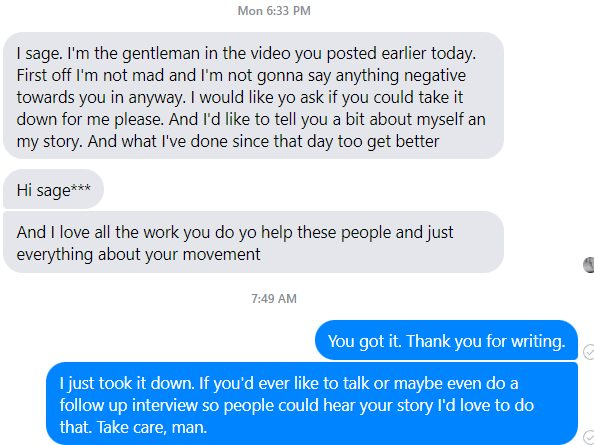

Timeline photos
You need to know that I feel things very deeply. I sometimes really fantasize how nice it must be to be a sociopath that feels nothing. I feel a lot.
I got this message this morning from the person in a video I put up that some of you felt was inappropriate.
I'm going to keep driving down this path of truth telling. I believe in its power. But God, the truth hurts a lot. You just need to know that every time I expose something for some reason, I know it's going to make someone feel a certain way that is not going to be pleasant. And I feel their pain every single time.